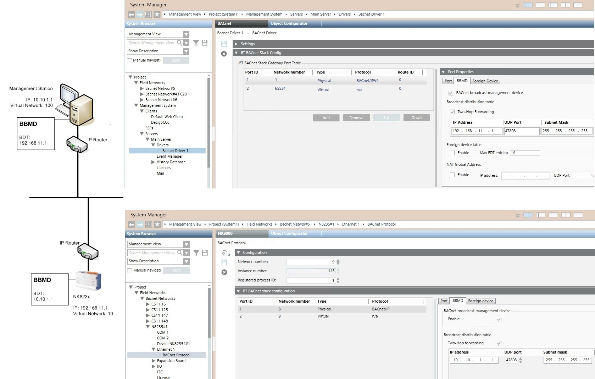

NK823x BACnet BBMD Configuration Example
The image below illustrates the configuration of the BACnet/ IP Broadcast Management Device (BBMD) for an NK823x subnet.
This is required when the management station and the NK823x unit do not belong to the same IP subnet. The BBMDs act as traffic routers across different IP subnets.
The upper image shows the BBMD configuration in the BACnet driver. Here, specify the IP address of the NK823x unit. In the BT BACnet Stack Config tab, select the BBMD tab of the Physical Port Properties.
If you have multiple subnets, you can add more BBMDs as necessary. Only one BBMD per subnet is required. See the BACnet driver configuration in the step-by-step procedure.
For more background information, see also BACnet Driver.
The lower image shows the BBMD configuration in the BACnet Protocol node of the NK823x Ethernet line. Here, specify the IP address of the management station.
See the BACnet Protocol configuration in the step-by-step procedure.
